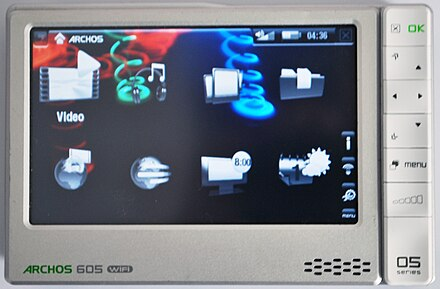
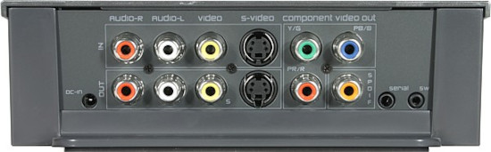

They don't make 'em like that any more: Archos 605 media player/recorder
 French company Archos was almost unknown outside France and, frankly, scarcely better known within it. Yet in 2002 this obscure company released the first portable media player. Now that almost any phone can play audio and video, it's easy to lose sight of how revolutionary this was. It's also easy to forget that, at that time, we had almost no legal way to obtain video or audio files, except by ripping DVDs or CDs, or recording television and radio broadcasts. On-demand streaming was theoretically possible even then, but almost nobody had a fast enough connection to the Internet to use it. This was the environment in which early portable media devices from Archos, Creative, iRiver and Apple came to the market.
The 605 WiFi, released in 2007, was probably the best-known of the Archos range and, in my view, the pinnacle. The same product family had the 405 (smaller) and 705 (bigger) -- identical in all respects to the 605 except capacity and size. Although I'm mostly writing about the 605 here, much of what I say applies to other devices in the same family. I owned all of them and, in fact, still do. There's little that these devices can do now that a modern cellphone or tablet can't -- but they still have the edge in a few areas. In 2007, they were unrivalled.
The Archos company continued to release innovative products for a few more years, but nothing topped the 605. The Archos brand still exists, but its connection to the pioneering small company of the 2000s is unclear to me. Archos had the misfortune to be in the same market as Apple and, later, Google; no small company can stand comfortably between these two behemoths. Throughout its early life, Archos' products were technically superior to Apple's, in every way that technical superiority could be measured. In the end, though, Apple's brutal marketing knocked Archos to its knees, and Google delivered the knock-out punch.
The 605 had a stand-out feature that none of its rivals offered. Not only could it play video, it could also record. With an optional (expensive) extra, the 'DVR station' dock, we could integrate the 605 into a television or A/V set-up. Using the DVR stations, not only could the 605 record video, it could switch on a television or A/V receiver, and select the appropriate channel to record. For a while, Archos released TV channel timetables, which users could download to the device to select which programs to record. Then, because the 605 was portable, you could take it out of the DVR dock and watch wherever you wanted. So far as I know, no other manufacturer had a product like this, before or since.

The DVR station was a serious piece of equipment, with inputs and outputs for just about every audio/video connection that existed at the time. Whether a non-specialist could have set it up, I have my doubts -- but Archos always catered to the geeks. While Apple dumbed down its portable players to suit a non-technical market, Archos focused on functionality and quality, even when that made their products quirky to use.
The 605's recording capabilities weren't limited to the DVR station: Archos sold a bunch of other nerdy video accessories. My favourite was the little bullet-style 'helmet camera'. I guess the idea was that you'd strap this to your bicycle or motorcycle helmet, and record your heroic activities. I used the helmet camera to video family holidays, and it worked fine -- and this was before direct-to-disk recording really existed in the consumer electronics marketplace. Again, it's easy to underestimate how far ahead of its time this capability was.
Another interesting accessory was the GPS add-on. With this, you could use your 605 as a sat-nav. Although interesting, I don't think this feature was implemented very well, and I never used it seriously. There was an external battery add-on that doubled as a desk stand, and included a USB port for connecting an external hard drive.
Many years before Netflix was streaming video, Archos had an on-line video store. Unfortunately, download speeds were so slow at that time, and the content range so limited, I don't think this was a commercial success. Owners of Archos devices filled them with their own CD/DVD rips -- and probably with bootleg movies as well -- of which, more later.
Archos sold the 605 with a range of storage options -- 2-4 Gb of solid-state storage, or magnetic disk drives from 20 to 160Gb. Again, we shouldn't lose sight of the fact that 160Gb was a colossal amount of storage for a portable device in 2007. It was close to the maximum storage that that a single drive could provide in those days.
Irritatingly, though, the device firmware was keyed to a specific model of drive, made specifically for Archos. So, not only was it impossible to replace the drive with a larger one, you couldn't even replace it with one of the same capacity and brand. If a hard drive failed -- and this was inevitable in a portable device -- only Archos could supply a functional replacement.
The 605 had a 5-inch screen with 800x480 pixel resolution. Again, not impressive by modern standards, but about the same resolution as a DVD movie, which was state-of-the-art at the time. The screen was touch-sensitive, but it was rarely necessary to soil it with fingerprints -- almost all features were accessible using a row of clicky hardware buttons. These were a joy to use, once you'd mastered the rather odd layout.
The 605 had a conventional 3.5-inch headphone jack, as everything did at the time. There was no support for Bluetooth headphones, because these were not widely available in 2007. Yes, it's hard to believe, but there was a time before Bluetooth headphones. If you had the DVR dock, you could connect the 605 to a proper hi-fi amplifier, for headphones or speakers.
The 605 supported WiFi, and Archos provided an implementation of the Opera web browser. Oddly, this was sold as an optional application. Other than streaming video from another computer on the same WiFi network -- which was possible, but rarely useful -- it's not clear what use the WiFi feature would have been without a Web browser. And the browser itself was of little use without an external keyboard and, of course, one was available in the geeky accessory range. There was an on-screen keyboard, but touch-screen technology at the time was not sensitive enough for this to be anything but extremely irritating.
The 605 supported a large range of audio file formats, and a comparatively small range of video file formats. If you were ripping your own DVDs, this lack of format support was not a problem, because you'd have to convert the DVD as you ripped it anyway. If you were recording from a broadcast source, the format was largely irrelevant, as the 605 would naturally record in a format it could play.
The narrow range of video formats was mostly an irritation to people who wanted to download bootleg movies. There were, and still are, hundreds of video formats in use by video pirates. In 2007 it would take a day -- perhaps a week -- to download a bootleg movie from a pirate site; converting it to an Archos-compatible format would only(!) take an hour or so on a decent desktop PC. Still, the Archos web forum was always swamped with complaints about how few video file formats the Archos devices supported. To be fair, there were legitimate reasons to ask for newer video formats to be supported -- it wasn't only piracy. Still, Archos lost sales because its video support wasn't pirate-friendly. I'm not sure what I find more dispiriting: the fact that owners of portable video players tend to have no respect for intellectual property, or that they're too lazy to learn how to use Handbrake.
The Archos 605 ran an embedded Linux operating system. This wasn't entirely an innovation -- the Archos PMA400 ('personal media assistant'), released in 2005, was also Linux-based. The use of Linux in the PMA wasn't really an innovation, either -- the PMA was internally similar to the Sharp Zaurus SL-5000, from about 2002. In fact, the PMA could run some of the same software as the Zaurus. Still, the use of Linux in a media player was a new idea back in 2005 -- while Android has subsequently made embedded Linux unremarkable in consumer devices, Android 1.0 was not released until 2007.
Unlike the PMA400, the 605 never really exposed its Linux internals to the user. Although various 'plug-ins' were available from Archos, the 605 was clearly not intended to be a programmable device. Of course, within weeks of release, the 605 had been unofficially rooted, and developers (myself included) found ways to run real Linux applications on it, including the PMA's QTopia user interface. Sadly, Archos made it increasingly difficult to root the device with subsequent firmware releases. Still, the Company did eventually do the decent thing, and the later 'Internet Tablet' models had user-flashable firmware. This led to the development of OpenAOS, a PMA-style firmware based on Angstrom Linux, on which I frittered away many happy evenings. But I digress.
By the time Archos released the Internet Tablet, Android was on the rise, and hackers turned their attention away from QTopia and computer-style embedded Linux, towards the more user-friendly Android. It was possible to flash early versions of Android onto the Internet Tablet, but they never worked very well. I can't recall whether we were ever able to boot Android on the 605, but I think not. At that time, I thought that QTopia was the future of embedded Linux devices, but I was wrong. There just weren't enough people interested in developing for QTopia, to produce any interesting applications. Although nearly every Android app was, and is, rubbish, there was such a huge developer base that a few good apps managed to sneak into the ecosystem. Later Archos products ran Android officially but, by that time, Archos had lost its innovative edge, and the tragic decline had begun.
Although mostly forgotten today, in the early 2000s Archos led the portable media market, while Apple and the others limped along behind. The 605 was an extraordinary achievement for its time -- it offered decent sound quality, enormous storage, recording capabilities, A/V integration, and a huge range of interesting accessories. Unlike Apple's players, Archos never forced its users to use proprietary software to install media on its players. It's a great example of how having technically superior products, talented developers, and vision does not guarantee market success. Archos produced uncompromising geek gadgets, little suited to the point-and-click generation.
An Archos media player was never a fashion statement and, in fact, some of the early models were decidedly ugly. The AV500, in particular, was laughably unsightly. Archos user interfaces made few concessions to aesthetics or, indeed, logic. Archos did not solicit user feedback with any enthusiasm, although it did run a beta-test program for a year or so. I took part in this, along with a handful of other geeks. Archos did fix bugs, but didn't implement any usability changes that we recommended, so far as I can remember. The Company's attitude essentially limited its customer base to hardcore technophiles.
There's also the unavoidable fact that hard drive-based portable devices are horrible fragile. Archos did themselves no favours when they decided not to make the drive user-replacable. Apple's hard-drive players did not have this limitation; it's even possible (now) to replace the hard drive in an iPod Classic with an SSD. What made the situation especially galling was that the Archos devices were trivially easy to open up, with nothing more than a screwdriver. It took five minutes to replace the drive but, unless you bought it from Archos, it wouldn't work.
For all that, the 605 is a joy to use, once you've figured it out. It sits nicely in the hand, and has a reassuring heft to it. The 605, like all the early Archos devices, is clearly not a cheap, throw-away item.
I've singled out the 605 to write about in this article but, in fact, all the early Archos devices are interesting. They all had unique capabilities, many of which were never bettered. It's interesting to speculate about here Archos might have gone, had the Company not been dragged into fruitless, unwinnable, competition with Apple and Google.